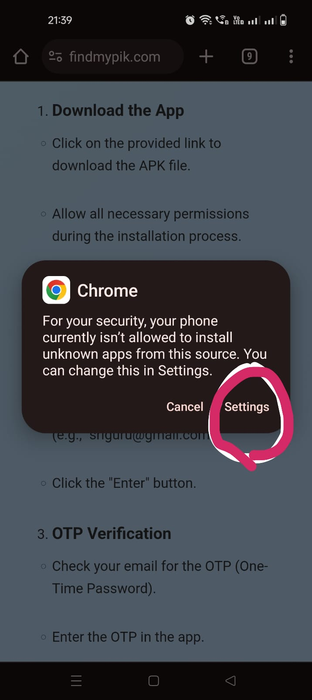
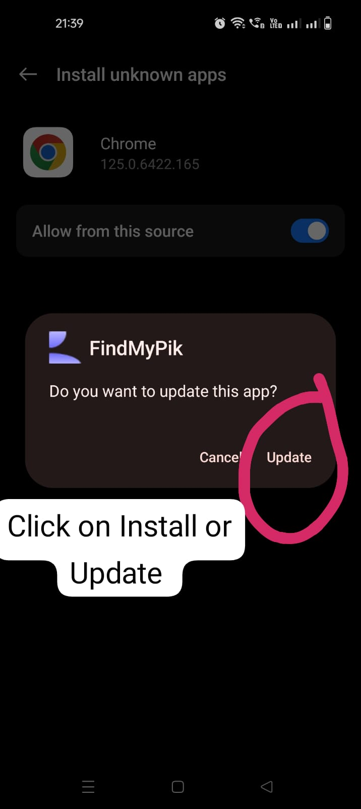

Introduction
Our face recognition service allows you to find your pictures in our database. Using advanced face recognition technology, we match your uploaded picture with others in our system to find all instances of your face.
Steps to use the Service
-
Download the App
- Click on the provided link to download the APK file.
- Allow all necessary permissions during the installation process.  
-
Email Verification
- Open the app and enter your email (e.g., "sriguru@gmail.com").
- Click the "Enter" button.
-
OTP Verification
- Check your email for the OTP (One-Time Password).
- Enter the OTP in the app.
- If you do not receive the OTP, go back to the email page, click the "Enter" button again, and recheck your email for the OTP. Enter the new OTP.
-
Profile Picture Upload
- Take a clear photo of yourself to be used as your profile picture for face detection.
- If the photo is not clear, you can retake it until it meets the clarity required for accurate face recognition.
- Once satisfied with the photo clarity, proceed to complete the registration.
-
Registration
- Enter your first name and last name.
- Click the "Register" button.
Our system will process your uploaded picture and compare it against our database using face recognition technology. This may take a few moments.
-
Album Search
- After logging in, navigate to the home.
- We will automatically use the face detection technology to search through the albums.
- If your photos are found in any album, you can see those photos inside that album
- Ensure to search through all available albums.
After processing, you will be presented with a list of matching pictures from our database. You can view and manage these pictures as needed.
Frequently Asked Questions
- What types of images can I find?
- Images that contain your picture will be shown to you.
- Is my uploaded image stored?
- We store your image securely and use it only for the purpose of matching it in our database. You can delete your uploaded images at any time.
- How accurate is the face recognition?
- Our face recognition technology is highly accurate, but the quality of the uploaded image can affect the results.
Contact Us
If you have any questions or need further assistance, please contact us at support@findmypik.com.